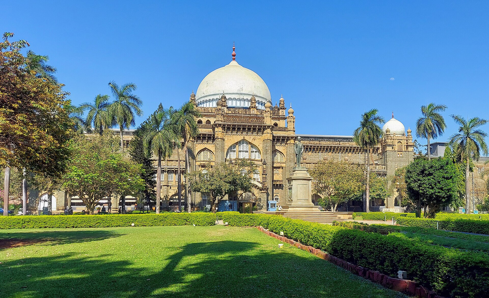

Chhatrapati Shivaji Maharaj Vastu Sangrahalaya
Explore the history and character of this remarkable Mumbai landmark.
Description
The Chhatrapati Shivaji Maharaj Vastu Sangrahalaya, formerly known as the Prince of Wales Museum, is one of Mumbai's important museums. It contains a large collection of archaeological, historical and artistic objects.
History
The museum was established to commemorate the visit of the Prince of Wales to India in 1905. The foundation stone was laid in 1911, and the museum building was completed in 1915.
The building is designed in an Indo-Saracenic architectural style, combining elements of Hindu, Islamic and European architecture. The museum was renamed Chhatrapati Shivaji Maharaj Vastu Sangrahalaya in 2010.